Backend - REST-Server¶
Ehe wir uns der IndexedDB-API zuwenden, erstellen wir zunächst eine "richtige" Datenbank für unsere Posts. Für diese Datenbank stellen wir die Implementierung einer Schnittstelle bereit, so dass wir die wesentlichen Datenbankanfragen darüber ausführen können. Diese wesentlichen Datenbankfragen werden mit CRUD abgekürzt, für Create, Read, Update und Delete. Das bedeutet, wir implementieren Funktionalitäten, mit denen wir einen neuen post in die Datenbank einfügen (create), aus der Datenbank auslesen (read), in der Datenbank aktualisieren (update) und aus der Datenbank löschen (delete) können.
Die Schnittstelle, die wir implementieren, ist eine sogenannte REST-API. REST steht für Representational State Transfer und basiert auf einigen wenigen Prinzipien:
- Alles wird als eine Ressource betrachtet, z.B.
post. - Jede Ressource ist durch URIs (Uniform Resource Identifiers) eindeutig identifizierbar, z.B.
http://localhost/posts. - Es werden die Standard-HTTP-Methoden verwendet, also
GET,POST,PUT,UPDATE. - Ressourcen können in verschiedenen Formaten vorliegen, z.B. in HTML, XML, JSON, ...
- Die Kommunikation ist zustandslos. Jede einzelne HTTP-Anfrage wird komplett isoliert bearbeitet. Es gibt keinerlei Anfragehistorie.
Das bedeutet, wir erstellen ein Backend (einen REST-Server), an den HTTP-Anfragen mit der eindeutig identifizierbaren Ressource gestellt werden. Das Backend erstellt daraus die entsprechende SQL-Query. Das Resultat der Datenbankanfrage wird im JSON- oder HTML- oder XML- oder in einem anderen Format bereitsgestellt.

Prinzipiell gibt es also ein Mapping von HTTP-Anfragen auf SQL-Anfragen:
| CRUD | SQL | MongoDB | HTTP |
|---|---|---|---|
| create | INSERT | insertOne(), insertMany() | POST |
| read | SELECT | findOne(), find() | GET |
| update | UPDATE | updateOne(), updateMany() | PUT (oder PATCH) |
| delete | DELETE | deleteOne(), deleteMany() | DELETE |
Zur Unterscheidung zwischen PUT und PATCH siehe z.B. hier oder hier.
Wir wollen uns ein Backend erstellen, über das wir unsere Daten verwalten. Dazu überlegen wir uns zunächst ein paar sogenannte Endpunkte (siehe Prinzipien von REST oben) und die Zugriffsmethoden, mit denen wir auf unsere Daten zugreifen wollen.
| Methode | URL | Bedeutung |
|---|---|---|
| GET | /posts | hole alle Datensätze |
| GET | /posts/11 | hole den Datensatz mit der id=11 |
| POST | /posts | füge einen neuen Datensatz hinzu |
| PUT | /posts/11 | ändere den Datensatz mit der id=11 |
| DELETE | /posts/11 | lösche den Datensatz mit der id=11 |
Der Wert der id ist natürlich nur ein Beispiel. Es soll für alle id-Werte funktionieren, die in unserem Datensatz enthalten sind. Korrekterweise beschreiben wir die Endpunkte mit variabler id besser durch /posts/:id oder /posts/{id}.
Ein Node.js-Projekt mit Express¶
Wir starten damit, uns ein node.js-Projekt zu erstellen. Dazu erstellen wir uns zunächst einen Ordner backend, wechseln in diesen Ordner und führen dann npm init aus:
mkdir backend
cd backend
npm init
Sie werden ein paar Sachen gefragt. Im Prinzip können Sie immer Enter drücken, außer beim entry point. Dort können Sie gleich server.js eingeben. Sie können das aber auch noch später in der package.json ändern.
This utility will walk you through creating a package.json file.
It only covers the most common items, and tries to guess sensible defaults.
See `npm help init` for definitive documentation on these fields
and exactly what they do.
Use `npm install <pkg>` afterwards to install a package and
save it as a dependency in the package.json file.
Press ^C at any time to quit.
package name: (backend)
version: (1.0.0)
description: Backend REST-API
entry point: (index.js) server.js
test command:
git repository:
keywords: rest api backend mongodb
author: J. Freiheit
license: (ISC)
About to write to /Users/jornfreiheit/Sites/IKT22/05_Backend/00_skript/backend/package.json:
{
"name": "backend",
"version": "1.0.0",
"description": "Backend REST-API",
"main": "server.js",
"scripts": {
"test": "echo \"Error: no test specified\" && exit 1"
},
"keywords": [
"rest",
"api",
"backend",
"mongodb"
],
"author": "J. Freiheit",
"license": "ISC"
}
Is this OK? (yes)
Die package.json wurde erstellt. Nun benötigen wir noch das Modul Express. Express bietet uns eine unkomplizierte Middleware für die Weiterverwaltung von http-Anfragen an die Datenbank und zurück.
npm install express --save
Die Option --save muss eigentlich nicht mehr angegeben werden, aber unter Express steht es noch so. Sie erhalten eine Meldung in der Form:
% npm install express --save
added 57 packages, and audited 58 packages in 887ms
7 packages are looking for funding
run `npm fund` for details
found 0 vulnerabilities
In der package.json wurde die entsprechende Abhängigkeit eingetragen:
1 2 3 4 5 6 7 8 9 10 11 12 13 14 15 16 17 18 19 20 | |
server.js erstellen und implementieren¶
Öffnen Sie nun das backend-Projekt in Ihrer IDE und erstellen Sie sich dort eine Datei server.js mit folgendem Inhalt:
1 2 3 4 5 6 7 8 9 10 11 12 13 14 15 16 | |
Das bedeutet, wir importieren express (Zeile 1), erzeugen uns davon ein Objekt und speichern dieses in der Variablen app (Zeile 4). Wir legen in einer Konstanten PORT die Portnummer 3000 fest (Zeile 5 - die Portnummer können Sie wählen). Das backend ist somit unter http://localhost:3000 verfügbar. Das eigentliche Starten des Webservers erfolgt in den Zeilen 10-16 durch Aufruf der listen()-Funktion von express. Die Syntax der listen()-Funktion ist generell wie folgt:
app.listen([port[, host[, backlog]]][, callback])
Wir übergeben als ersten Parameter die PORT-Nummer (3000) und als zweiten Parameter eine (anonyme) Funktion als sogenannten callback. Callbacks sind hier näher erläutert. Die anonyme Funktion wird durch die listen()-Funktion aufgerufen. Sollte ein Fehler aufgetreten sein (z.B. wenn der Port bereits belegt ist), wird der anonymen Funktion ein error-Objekt übergeben. Ist das der Fall, wird der Fehler auf der Konsole ausgegeben. Wird der anonymen Funktion kein Objekt übergeben, wurde der Webserver korrekt gestartet und die entsprechende Meldung erscheint auf der Konsole.
Beachten Sie auch die verwendete Syntax ${PORT} im sogenannte template literal. Beachten Sie, dass template literals nicht in einfachen (') oder doppelten (") Anführungsstrichen stehen, sondern in ` (backticks).
Router¶
Noch lässt sich unser Programm aber nicht ausführen. Wir benötigen im Projektordner noch eine Datei routes.js. Diese wird nämlich in der server.js bereits in Zeile 2 eingebunden und in Zeile 8 verwendet.
1 2 3 4 5 6 7 8 9 10 | |
Beim Router handelt es sich um eine Middleware (siehe hier), die die Routen verwaltet und request-Objekte an die entsprechende Routen weiterleitet und response-Objekte empfängt. In unserer routes.js haben wir zunächst eine GET-Anfrage implementiert (Zeile 5). Das request-Objekt heißt hier req. Das verwenden wir aber gar nicht. Das respones-Objekt heißt hier res und wird durch die Anfrage erzeugt. Wir senden in der response ein JavaScript-Objekt zurück, das einen Schlüssel message enthält.
In der server.js haben wir mit app.use(express.json()) (Zeile 7) angegeben, dass alle JavaScript-Objekte in der response nach JSON umgewandelt werden sollen. Wenn nun die URL localhost:3000 aufgerufen wird, dann wird ein request ausgelöst, den wir hier mit Hello FIW! als response beantworten (Zeilen 5-8).
Wichtig ist, dass wir router mit module.exports exportieren, damit es von anderen Modulen importiert und genutzt werden kann. Siehe dazu z.B. hier. Meine Empfehlung ist, (noch) nicht das neue ESM6-Format zu nutzen!
Noch "läuft" unser Backend aber noch nicht. Wir müssen es erst starten.
Starten des Projektes und Installation von nodemon¶
Das Projekt lässt sich nun starten. Wir geben dazu im Terminal im backend-Ordner
node server.js
ein. Im Terminal erscheint
server running on http://localhost:3000
und wenn Sie im Browser die URL http://localhost:3000/ eingeben, wird dort

angezeigt. Sie können auch Postman öffnen und http://localhost:3000 eintragen (GET-Methode):

Wann immer wir jetzt jedoch etwas an der Implementierung ändern, müssen wir im Terminal zunächst den Webserver mit
Strg-C // bzw. Control-C
stoppen, um ihn dann wieder mit node server.js zu starten. Um das zu umgehen, gibt es das Paket nodemon. Da es nur sinnvoll während der Entwicklung eingesetzt werden kann (und sollte), installieren wir es als eine development dependency:
npm install --save-dev nodemon
Die package.json sieht daraufhin so aus:
1 2 3 4 5 6 7 8 9 10 11 12 13 14 15 16 17 18 19 20 21 22 23 | |
Zur Verwendung von nodemon fügen wir in die package.json unter "scripts" noch die Eigenschaft watch (frei gewählt) und den dazugehörigen Wert nodemon server.js ein:
1 2 3 4 5 6 7 8 9 10 11 12 13 14 15 16 17 18 19 20 21 22 23 24 | |
Nun lässt sich die Anwendung mithilfe von nodemon per
npm run watch
starten und muss auch nicht mehr gestoppt und neu gestartet werden, wenn Änderungen an der Implementierungen durchgeführt wurden. Die Ausgabe im Terminal nach Eingabe von npm run watch ist ungefähr so:
> backend@1.0.0 watch
> nodemon ./server.js
[nodemon] 2.0.16
[nodemon] to restart at any time, enter `rs`
[nodemon] watching path(s): *.*
[nodemon] watching extensions: js,mjs,json
[nodemon] starting `node ./server.js`
server running on http://localhost:3000
Hier nur zum Verständnis. Angenommen, wir ändern bspw. in der server.js die Zeile 8 zu
app.use('/api', routes);
, dann würden alle Routen, die wir in routes.js definieren, unter localhost:3000/api verfügbar sein. Wenn wir dann also z.B. in der routes.js die Zeile 5 zu
router.get('/fiw', async(req, res) => {
ändern, dann ist der GET-Endpunkt localhost:3000/api/fiw.
Mongoose installieren¶
MongoDB ist die am meisten verwendete NoSQL (not only SQL) Datenbank. Sie basiert nicht auf Relationen, Tabellen und ihren Beziehungen zueinander (ist also keine relationale Datenbank), sondern speichert Dokumente in JSON-ähnlichem Format. Die Community Edition der MongoDB ist Open Source und kostenlos verfügbar. Sollten Sie mit Visual Studio Code arbeiten, sollten Sie sich am besten die MongoDB for VS Code-Ereiterung installieren.
Zur Verwendung von MongoDB im Backend verwenden wir das Modul Mongoose. Wir installieren Mongoose mithilfe von
npm install mongoose --save
In die package.json wird das Paket und die entsprechende Abhängigkeit eingetragen:
1 2 3 4 5 6 7 8 9 10 11 12 13 14 15 16 17 18 19 20 21 22 23 24 25 | |
Mongoose stellt eine einfach zu verwendende Schnittstelle zwischen Node.js und MongoDB bereit. Die
MongoDB benötigen wir aber trotzdem (wir könnten jedoch auch eine Cloud von MongoDB oder z.B. mlab.com verwenden). Bevor wir uns mit der MongoDB verbinden, erstellen wir zunächst noch eine Datenbank.
MongoDB Compass¶
Um sich Ihre MongoDB-datenbanken anzuschauen, empfehle ich Ihnen das Tool MongoDB Compass. Download und Installation sind normalerweise einfach.
Dotenv für sichere Zugangsdaten¶
Für die "geheimen" Zugangsdaten (die jetzt noch gar nicht "geheim" sind) verwenden wir das dotenv-Paket:
npm install dotenv --save
Im Projektordner erstellen wir und eine Datei .env (mit vorangestelltem Punkt!) und schreiben darin:
1 | |
Beachten Sie, dass der Wert nicht in Hochkomma steht und dass auch kein Semikolon folgt!
Wir fügen dotenv in die server.js ein und greifen mithilfe von process.env.DB_CONNECTION auf den Wert von DB_CONNECTION zu:
1 2 3 4 5 6 7 8 9 10 11 12 13 14 15 16 17 18 19 20 21 22 23 24 25 26 | |
In Zeile 4 wird das dotenv-Paket importiert. Mithilfe der config()-Funktion wird die .env-Datei eingelesen. Auf die in der .env-Datei hinterlegten Schlüssel-Werte-Paare (mit = dazwischen) kann dann mittels process.env.<Schlüssel> zugegriffen werden (siehe Zeile 21).
Beachten Sie, die .env-Datei in die .gitignore einzutragen. Die .env-Datei sollte nicht committed werden!
Ein Model erstellen¶
Mongoose ist Schema-basiert. Ein Schema kann man sich wie ein Datenmodell vorstellen. Tatsächlich wird es verwendet, um ein entsprechendes Mongoose-Model zu erstellen. Ein Schema wird unter Aufruf des Konstruktors (new Schema()) in Mongoose erstellt. Unter Verwendung des Schemas wird dann mithilfe der model()-Funktion das Datenmodell erzeugt.
Wir werden im Folgenden zeigen, wie ein Schema für posts erstellt wird. Das Datenmodell heißt dann Post. Um später auch weitere Schemata, z.B. für user o.ä. zu entwicklen und diese zu trennen, erstellen wir das Schema in einem eigenen Ordner models. Das bedeutet, wir erstellen im Projektordner
- ein Ordner
modelsund - darin eine Datei
models/posts.js
Die Datei posts.js bekommt folgenden Inhalt:
const mongoose = require('mongoose');
const schema = new mongoose.Schema({
title: String,
location: String,
image_id: String
});
module.exports = mongoose.model('Post', schema);
Weiterführende Informationen zu Mongoose-Models finden Sie z.B. hier. Das Thema Schema wird z.B. hier näher erläutert.
Zugriffe auf die Datenbank¶
Nun haben wir alles, was wir benötigen, um unsere Anfragen zu implementieren. Wir nutzen den express.Router, um die Routen zu definieren und können mithilfe des Mongoose-Models auf die MongoDB zugreifen. Wir werden nun sukzessive alle Anfragen in die routes.js einfügen.
R - read all¶
Wir beginnen mit der Anfrage, alle Daten aus der Datenbank auszulesen. Für die MongoDB erfolgt dies mit der Funktion find(). In routes.js ändern wir unsere GET-Anfrage wie folgt:
1 2 3 4 5 6 7 8 9 10 11 12 | |
Beachten Sie, dass wir dazu nun das Post-Model in die routes.js einbinden (Zeile 3). Die Route wird mit localhost:3000/posts definiert. Die anonyme Callback-Funktion enthält noch zwei Schlüsselwörter: async und await. Die Funktion find() ist ein Promise (siehe dazu hier). Die Funktion find() wird asynchron ausgeführt und "irgendwann" ist entweder das Ergebnis dieser Funktion verfügbar oder die Funktion gibt einen Fehler zurück. Auf eines der beiden wird gewartet (await). Nur eine als async deklarierte Funktion darf einen await-Aufruf enthalten (siehe dazu z.B. hier).
Die Ausgabe der Werte auf die Konsole (Zeile 8) ist natürlich nicht erforderlich und Sie können sie auch löschen, wenn Sie wollen. Wenn Sie nun in Postman GET http://localhost:3000/posts aufrufen, erscheinen alle Einträge aus der Datenbank. Allerdings haben wir dort noch keine Einträge. Wir bekommen deshalb ein leeres Array [] zurück.
C - create¶
Als nächstes implementieren wir einen Endpunkt, an dem wir einen neuen Datensatz in die Datenbank anlegen können. Dafür gibt es die http-Methode POST. Wir führen also nicht mehr eine GET-, sondern eine POST-Anfrage durch. Bei dieser POST-Anfrage wird der neue Datensatz an den Webserver mitgeschickt. Dies erfolgt im body des request-Objektes. Das Schreiben des Datensatzes in die Datenbank erfolgt mithilfe der save()-Funktion von MongoDB.
12 13 14 15 16 17 18 19 20 21 | |
In den Zeilen 15-17 werden die Daten aus dem body des request-Objektes ausgelesen und mit diesen Daten ein neues Post-Objekt erzeugt. Dieses neue Post-Objekt (newPost) wird in Zeile 19 in die Datenbank gespeichert und in Zeile 20 als response zurückgeschickt.
Nun geben wir in Postman POST http://localhost:3000/posts ein und befüllen den Body z.B. mit:
1 2 3 4 5 | |
Achten Sie darauf, dass in der zweiten Menüzeile rechts JSON ausgewählt ist (im Bild blau) - nicht Text. Wir klicken auf Send und es erscheint:
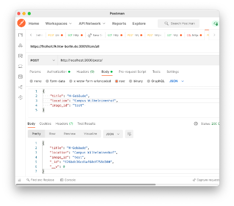
Schauen Sie auch in MongoDB Compass nach, ob der Datensatz dort erscheint:
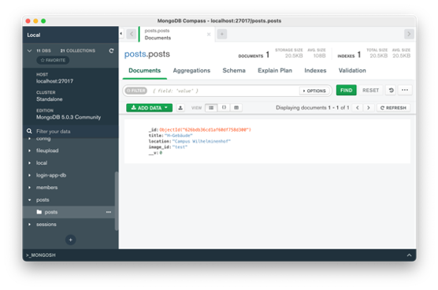
R - read one¶
Wir erweitern die routes.js um einen Endpunkt, der uns für eine gegebene id den entsprechenden Datensatz zurückliefert. Die _id werden von MongoDB automatisch vergeben und sind recht kryptisch, also z.B. "626bdb36cd1af60df758d300". Wir können natürlich nach jedem beliebigen Wert für jeden Schlüssel in der Datenbank suchen. Wir nehmen hier beispielhaft die _id.
Die id wird aus der URL des Endpunktes ausgelesen, d.h. wenn wir bspw. den Endpunkt GET http://localhost:3000/posts/626bdb36cd1af60df758d300 eingeben, dann soll der Datensatz mit der _id: 626bdb36cd1af60df758d300 im JSON-Format zurückgegeben werden. Wir nutzen dazu parametrisierte Routen und lesen die id aus der Parameterliste aus. Paremtrisierte Routen werden per : und dann den Namen des Parameters (hier id) erstellt. Um dann den Wert des Parametrs id aus der Parameterliste auszulesen, wird params verwendet. Im folgenden Code lassen wir req.params auf die Konsole ausgeben, um die Funktionsweise zu erläutern. Diese Ausgabe kann natürlich gelöscht werden (Zeile 27).
23 24 25 26 27 28 29 30 31 32 33 34 35 | |
Zum Finden eines einzelnen Datensatzes wird in MongoDB die Funktion findOne() verwendet (siehe hier). Wird der Datensatz gefunden, d.h. existiert die entsprechende _id, dann wird dieser in der response zurückgesendet (Zeile 28). Existiert er nicht, wird der HTTP-Statuscode 404 gesendet (Zeile 30) und ein JSON mit der error-Nachricht Post does not exist! (Zeile 31).
Nach Neustart des Servers geben wir in Postman z.B. GET http://localhost:3000/posts/626bdb36cd1af60df758d300 ein (bei Ihnen sind die _id-Werte andere!) und erhalten:
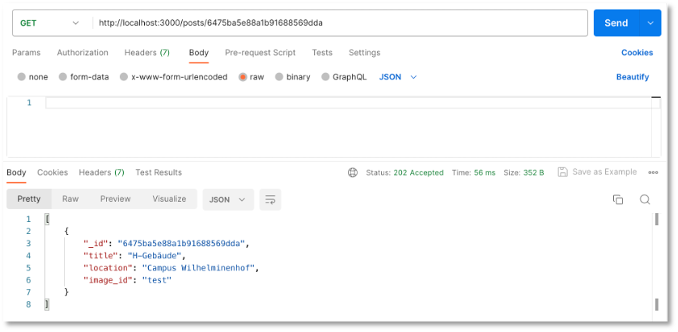
Probieren Sie auch einmal GET http://localhost:3000/posts/0 aus, um die Fehlermeldung als JSON zu sehen.
U - update¶
Um einen bereits existierenden Datensatz zu ändern, kann entweder die HTTP-Anfrage PUT oder PATCH verwendet werden. Zur Unterscheidung zwischen PUT und PATCH siehe z.B. hier oder hier. Um einen Datensatz in der MongoDB zu ändern, stehen prinzipiell mehrere Funktionen zur Verfüging:
updateOne(): ändert einzelne (oder alle) Teile eines Datensatzes und sendet die_idzurück, falls ein neur Datensatz angelegt wurde,findOneAndUpdate(): ändert einzelne (oder alle) Teile eines Datensatzes und sendet den kompletten Datensatz zurück,replaceOne(): ändert den kompletten Datensatz.
In der folgenden Implementierung haben wir uns für die HTTP-Anfragemethode PATCH und für die MongoDB-Funktion updateOne() entschieden. Diese Funktion erwartet als ersten Parameter einen <filter>, d.h. die Werte, nach denen nach einem Datensatz gesucht werden soll. Im folgenden Beispiel ist der Filter die _id. Dazu wird erneute ein Parameter id für die URL definiert. Der zweite Parameter der updateOne()-Funktion sind die zu ändernden Werte für diesen Datensatz. In der folgenden Implementierung werden diese zu ändernden Werte als ein JSON dem body des request-Objektes übergeben. Um zu ermöglichen, dass ein, zwei oder drei Schlüssel-Werte-Paare in diesem JSON enthalten sein können, prüfen wir die Einträge im body und setzen daraus ein neues member-Objekt zusammen, wenn es bereits in der Datenbank existiert (deshalb zunächst findOne()):
37 38 39 40 41 42 43 44 45 46 47 48 49 50 51 52 53 54 55 56 57 58 59 60 | |
Wir können diese Funktion in Postman ausprobieren, indem wir im body z.B. das JSON
1 2 3 | |
mit unserem Request übergeben und PATCH http://localhost:3000/posts/626bdb36cd1af60df758d300 wählen (bei Ihnen eine andere id!). Der Datensatz mit der _id=626bdb36cd1af60df758d300 wird dann aktualisiert.
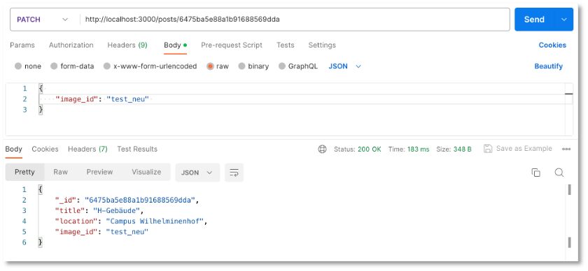
Schauen Sie auch in der Datenbank nach (z.B. in MongoDB Compass) und wählen auch ruhig nochmal GET http://localhost:3000/posts (z.B. in Postman).
D - delete one¶
Jetzt implementieren wir noch den Endpunkt, um einen Datensatz zu löschen. Dazu werden die HTTP-Anfragemethode DELETE und die MongoDB-Funktion deleteOne() verwendet. Im folgenden Beispiel wird der Datensatz erneut über die _id ermittelt und dafür erneut die parametrisierte URL ausgelesen:
87 88 89 90 91 92 93 94 95 96 | |
Wenn wir nun in Postman z.B. DELETE http://localhost:3000/members/626bdb36cd1af60df758d300 wählen (bei Ihnen eine andere id!), wird der Datensatz mit der _id=626bdb36cd1af60df758d300 aus der Datenbank gelöscht.
Hier nochmal die vollständige routes.js:
routes.js
1 2 3 4 5 6 7 8 9 10 11 12 13 14 15 16 17 18 19 20 21 22 23 24 25 26 27 28 29 30 31 32 33 34 35 36 37 38 39 40 41 42 43 44 45 46 47 48 49 50 51 52 53 54 55 56 57 58 59 60 61 62 63 64 65 66 67 68 69 70 71 72 73 | |
Cross-Origin Resource Sharing (CORS)¶
Die Same Origin Policy (SOP) ist ein Sicherheitskonzept, das clientseitig Skriptsprachen (also z.B. JavaScript oder CSS) untersagt, Ressourcen aus verschiedenen Herkunften zu verwenden, also von verschiedenen Servern. Dadurch soll verhindert werden, dass fremde Skripte in die bestehende Client-Server-Kommunikation eingeschleust werden. Gleiche Herkunft (origin) bedeutet, dass das gleiche Protokoll (z.B. http oder https), von der gleichen Domain (z.B. localhost oder htw-berlin) sowie dem gleichen Port (z.B. 80 oder 4200) verwendet werden. Es müssen alle drei Eigenschaften übereinstimmen.
Mit dem Aufkommen von Single Page Applications und dem darin benötigten AJAX kam jedoch der Bedarf auf, die SOP aufzuweichen. Es sollte möglich sein, dass z.B. JavaScript sowohl client-seitig das DOM ändert als auch einen Request an den Server (das Backend) sendet. Der Kompromiss, der dafür gefunden wurde, nennt sich Cross-Origin Resource Sharing (CORS). Damit ist es möglich, für einige oder alle Anfragen zu definieren, dass sie im Sinne der SOP trotzdem erlaub sein sollen.
Um CORS für Ihr Backend zu aktivieren, wechseln Sie im Terminal in Ihren backend-Ordner und geben dort
npm install cors
ein. Öffnen Sie dann die server.js und fügen Sie die hervorgehobenen Zeilen ein:
1 2 3 4 5 6 7 8 9 10 11 12 13 14 15 16 17 18 19 20 21 22 23 24 25 26 27 28 29 | |
Wenn Sie z.B. nur die get-Anfrage teilen wollen, dann wählen Sie nicht app.use(cors());, sondern
app.get("/", cors(), (req, res) => {
res.json({ message: "Hello FIW!" });
});
Mehr zum CORS-Paket von node.js bzw. express finden Sie hier.
Success
Das bis hier erstellte Backend ist unter https://github.com/jfreiheit/IKT-PWA-Backend.git verfügbar.
Erweiterung um das Speichern von Bildern¶
Bis jetzt haben wir nur Daten im JSON-Format zwischen Frontend und Backend ausgetauscht und auch nur solche Daten in der MongoDB gespeichert. Bilder (und auch andere Dateien) sind FormData-Objects im multipart/form-data-Format. Zur Behandlung solcher Daten verwenden wir ein Middleware für unser Backend, namens Multer.
Hint
Wenn Sie nur am Code für unser Backend interessiert sind, dann können Sie auch direkt zu Zusammenführen der Funktionalitäten springen. Im Folgenden werden die Entstehung aber näher erläutert und verschiedene Varianten diskutiert.
MongoDB speichert Daten bis zu einer Größe von 16Mb im Binärformat. Um auch größere Dateien (Bilder, Videos, pdf, ...) speichern zu können, werden die Dateien in chunks zerlegt und können dann aus diesen Stücken wieder zusammengesetzt werden. Dafür gibt es in der MongoDB eine GridFS-Spezifikation (siehe auch hier oder hier). Zur Verwendung von GridFS gibt es die beiden Pakte multer-gridfs-storage und gridfs-stream.
Wir installieren im Backend-Projekt alle drei Pakete und zeigen im Folgenden deren Verwendung:
npm install multer multer-gridfs-storage gridfs-stream
Die package.json sollte nun ungefähr so aussehen:
1 2 3 4 5 6 7 8 9 10 11 12 13 14 15 16 17 18 19 20 21 22 23 24 25 26 27 28 29 30 31 32 33 34 | |
Wir kümmern uns nun zunächst darum, Bilder in die MongoDB hochzuladen.
Upload von Bildern¶
Für den Upload der Bilder erstellen wir zunächst einen Ordner middleware und darin eine Datei upload.js. In dieser Datei wird unter Verwendung von Multer ein GridFsStorage eingerichtet. Die zu verwendende Collection benennen wir hier fileupload (siehe bucketName). Sie können diesen Namen frei wählen. Beachten Sie dann aber im Folgenden überall die Verwendung von fileupload (in der MongoDB entstehen die Collections fileupload.files und fileupload.chunks - siehe z.B. hier oder hier).
1 2 3 4 5 6 7 8 9 10 11 12 13 14 15 16 17 18 19 20 21 22 23 24 | |
Beachten Sie, dass wir beim Upload der Bilder für diese Bilder Dateinamen mithilfe von ${Date.now()}-jf-${file.originalname} erstellen bzw. festlegen. Damit diese Dateinamen eindeutig sind, wird mithilfe von Date.now() der aktuelle Zeitstempel verwendet. Der String -jf- in der Mitte kann natürlich auch durch Ihre Initialen ersetzt (oder weggelassen) werden. Außerdem wird auch noch der originale Dateiname verwendet. Insgesamt sollte sichergestellt werden, dass die Dateinamen eindeutig sind (deshalb auch Date.now()).
In Zeile 10 werden die Dateitypen festgelegt, die akzeptiert werden, hier png und jpeg. Diese Liste kann erweitert oder eingegrenzt werden.
Diese Middleware nutzen wir nun für den POST-Request des Bildes und erstellen einen Ordner routes und darin eine Datei upload.routes.js mit folgendem Inhalt:
1 2 3 4 5 6 7 8 9 10 11 12 13 14 15 16 17 18 19 20 21 | |
In Zeile 5 wird die multer-Middleware mit update.single('file') aufgerufen. Neben der Funktion .single(fieldname) stehen auch die Funktionen .array(fieldname[, maxCount]) und .fields(field) zur Verfügung, um gleichzeitig mehrere Dateien hochzuladen (siehe multer).
Als Response wird die URL zurückgegeben, unter der das Bild heruntergeladen werden kann (http://localhost:4000/download/${req.file.filename}).
Routen ändern und einbinden¶
In der ursprünglichen Implementierung hatten wir die Datei routes.js noch im Projektordner gehabt. Wir benennen diese in posts.routes.js um und schieben sie ebenfalls in den routes-Ordner. Beachten Sie, dass Sie dadurch in der server.js auch den Import auf const routes = require('./routes/posts.routes'); ändern müssen.
Da wir nun aber auch die upload-Route einbinden, ändern wir gleich mehrere Sachen. Zunächst wird der ursprüngliche routes zu postRoutes und die generelle Route dafür wird /posts:
1 2 3 4 5 6 7 8 9 10 11 12 13 14 15 16 17 18 19 20 21 22 23 24 25 26 27 28 29 30 31 | |
In der posts.routes.js kann nun aus den URLs der Endpunkte jeweils das /posts entfernt werden:
1 2 3 4 5 6 7 8 9 10 11 12 13 14 15 16 17 18 19 20 21 22 23 24 25 26 27 28 29 30 31 32 33 34 35 36 37 38 39 40 41 42 43 44 45 46 47 48 49 50 51 52 53 54 55 56 57 58 59 60 61 62 63 64 65 66 67 68 69 70 71 72 73 | |
Upload mithilfe von Postman¶
Das Hochladen der Bilder kann nun bereits getestet werden. Starten Sie das Backend. Öffnen Sie Postman und geben Sie als URL http://localhost:3000/upload ein und wählen als Anfragemethode POST. Klicken Sie auf Body und markieren dann form-data:
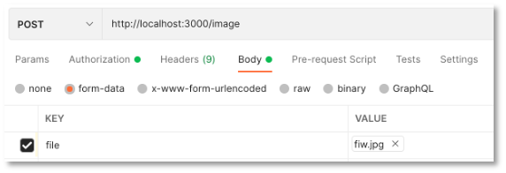
Geben Sie unter KEY den Schlüssel file ein (das wird manchmal vergessen und dann bekommen Sie einen multer-Fehler unexpected field!) und wählen Sie aus dem Dropdown-Menü File. Unter VALUE erscheint der Button Select Files. Klicken Sie darauf und wählen ein png- oder ein jpeg-Bild (kann auch .jpg sein) aus, das Sie hochladen wollen. Klicken Sie dann auf Send. Es erscheint:
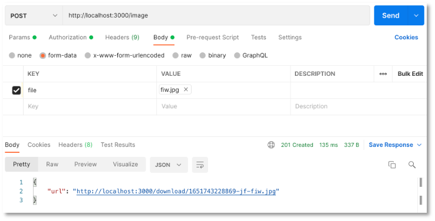
Ich habe in diesem Beispiel die Datei fiw.jpg hochgeladen.
Wenn Sie sich die MongoDB anschauen, dann finden Sie darin die beiden Collections posts.files und posts.chunks. In posts.files sind die Metadaten des hochgeladenen Bildes zu finden, z.B.
{
"_id": {
"$oid": "627399fc6820d87a03418810"
},
"length": 86584,
"chunkSize": 261120,
"uploadDate": {
"$date": "2022-05-05T09:33:48.949Z"
},
"filename": "1651743228869-jf-fiw.jpg",
"contentType": "image/jpeg"
}
Die dazugehörige _id finden Sie auch in posts.chunks (können Sie sich in der mongosh mit db.posts.chunks.find({ _id: "627399fc6820d87a03418810" }) anschauen). Darin ist das Bild im Binary-Format gespeichert.
Download von Bildern¶
Für den Download der gespeicherten Bilder gehen wir ähnlich vor, wie beim Upload, benötigen dafür aber nicht mehr die multer-Middleware, dafür aber gridfs-stream. Wir erstellen im Ordner routes die Datei download.routes.js mit folgendem Inhalt:
1 2 3 4 5 6 7 8 9 10 11 12 13 14 15 16 17 18 19 20 21 22 23 24 25 26 27 28 29 30 31 | |
GridFSBucket ist eine Klasse aus der Node.js-MongoDB-API. Diese hätten wir auch schon für das Upload verwenden können (siehe z.B. hier).
Da wir über den Dateinamen auf die Datei zugreifen wollen, benötigen wir zunächst die entsprechende _id der Datei in der posts.chunks-Collection. Dazu greifen wir mithilfe von find() auf die posts.files-Collection zu und ermitteln die _id. Die find()-Funktion gibt einen sogenannten Cursor auf das Array aller gefundenen Datensätze zurück. Mithilfe von forEach() durchlaufen wir dieses Array (enthält aber nur einen Datensatz) und ermitteln die _id. Mit der openDownloadStream()-Funktion der GridFSBucket()-Klasse öffnen wir den Download-Stream des Bildes und geben ihn als response res zurück.
Wir binden die download-Route nun noch in unsere server.js ein:
1 2 3 4 5 6 7 8 9 10 11 12 13 14 15 16 17 18 19 20 21 22 23 24 25 26 27 28 29 30 31 32 | |
Download mithilfe von Postman¶
Der Test des GET http://localhost:3000/download/:filename-Endpunktes ist einfach. Dazu verwenden wir einfach die URL, die durch den Upload als Response zurückgegeben wurde (im obigen Beispiel also "http://localhost:3000/download/1651743228869-jf-fiw.jpg"):
Geben Sie in Postman also Ihre URL ein, wählen GET und klicken Send. Es erscheint das Bild:
Da es sich um die GET-Methode handelt, können Sie die URL http://localhost:3000/download/1651743228869-jf-fiw.jpg natürlich auch in den Browser eingeben und das Bild erscheint.
Download als base64-String¶
Im oberen Beispiel wurde das Bild beim Download gestreamt. Wir betrachten nun die Möglichkeit, dass es als base64-String gesendet wird. Base64 ist ein Verfahren zur Kodierung von 8-Bit-Binärdaten (z.B. Bilder) in eine Zeichenfolge, die nur aus lesbaren, Codepage-unabhängigen ASCII-Zeichen besteht. Der String ist für ein Bild sehr lang. Er lässt sich aber leicht in eine Bildquelle umwandeln, damit das Bild dann im Frontend dargestellt werden kann.
Wir werden in der download.routes.js beide Möglichkeiten lassen (also sowohl den Stream als auch den base64-String). Deshalb passen wir die Routen der Endpunkte an. Die /show/:filename-Route ist für den Stream und die /send/:filename-Route für den base64-String. Wir präsentieren zunächst den Code und erläutern ihn dann. Die download.routes.js sieht dann so aus:
1 2 3 4 5 6 7 8 9 10 11 12 13 14 15 16 17 18 19 20 21 22 23 24 25 26 27 28 29 30 31 32 33 34 35 36 37 38 39 40 41 42 43 44 45 46 47 48 49 50 51 52 53 54 55 56 57 58 59 60 61 62 63 64 65 66 67 68 69 70 71 72 73 74 75 76 77 78 79 80 81 82 83 84 85 86 87 88 89 90 91 | |
Die Funktion sieht auf den ersten Blick sehr umfangreich aus. Die meisten Zeilen sind jedoch für die Fehlerbehandlung. Wenn wir die Fehlerbahndlung (und die Kommentare und die Konsolenausgaben) entfernen, dann bleibt nur noch das übrig:
1 2 3 4 5 6 7 8 9 10 11 12 13 14 15 16 17 18 19 20 21 22 23 24 25 | |
Wir verwenden hier also direkt das mongodb-Paket, das ist der MongoDB-Treiber für Node.js. Wir stellen eine Verbindung mit der Datenbank posts her (Zeile 5) und erstellen uns drei Variablen, eine für die Datenbank, eine für die posts.files-Collection und eine für die posts.chunks-Collection (siehe GridFS). Dann suchen wir in der posts.files-Collection nach dem Dateinamen und ermitteln die zugehörige _id (speichern als files_id, erhalten wir aus docs[0]._id - siehe Zeile 13). Nun suchen wir alle chunks mit dieser files_id und erhalten ein chunks-Array. Dieses Array enthält die data des jeweiligen chunk. Mithilfe der JavaScript-Funktion toString('base64) wandeln wir diese Daten in einen String um und speichern die String in das Array fileData. Dieses Array ist also ein Array aus Strings. Unter der Verwendung der join('')-Funktion von JavaScript werden alle diese String-Einträge zu einem String verbunden. Vor diesen String setzen wir noch "data:image/jpeg;base64," (siehe z.B. hier).
Wenn wir nun ein Bild downloaden wollen, geben wir in Postman z.B. http://localhost:3000/download/1652090780364-jf-htwbild4.jpg ein und erhalten den sehr langen base64-String des Bildes. Die gleiche Funktionalität haben Sie auch, wenn Sie einen Online-Encoder verwenden, z.B. base64-image.de.
Delete von Bildern¶
Das Löschen der Bilder ist ganz ähnlich zum Download. Erstellen Sie die Datei routes/delete.route.js:
1 2 3 4 5 6 7 8 9 10 11 12 13 14 15 16 17 18 19 20 21 22 23 24 25 26 | |
und binden diese in die server.js ein:
1 2 3 4 5 6 7 8 9 10 11 12 13 14 15 16 17 18 19 20 21 22 23 24 25 26 27 28 29 30 31 32 33 | |
Delete mithilfe von Postman¶
Zum Testen verwenden Sie den gleichen Dateinamen wie beim Download und wählen als Anfragemethode DELETE.
Zusammenführen der Funktionalitäten¶
Wir haben nun recht viele Routen und Endpunkte in unserem Backend. Wir wollen aber gerne, dass es nur die fünf genannten Endpunkte gibt:
| Methode | URL | Bedeutung |
|---|---|---|
| GET | /posts | hole alle Datensätze |
| GET | /posts/11 | hole den Datensatz mit der id=11 |
| POST | /posts | füge einen neuen Datensatz hinzu |
| PUT | /posts/11 | ändere den Datensatz mit der id=11 |
| DELETE | /posts/11 | lösche den Datensatz mit der id=11 |
Das bedeutet, wir binden den Upload und Download von Bildern nun in unsere posts-Routen ein. Die Funktionen werden dabei "etwas" umfangreicher.
Zum Verständnis¶
Wir verwenden Multer und GridFs storage. Multer ist eine Middleware für Node.js, um Daten im multipart/form-data-Format zu verwalten. Die grundsätzliche Idee ist, dass im Request nicht nur ein body, sondern auch eine file-Eigenschaft enthalten ist (neben dem header). Multer verwendet einen storage, um Bilder (oder andere Dateien) zu speichern. Einen solchen storage bietet GridFs storage. Dieser kann sogar Dateien größer als 16 MB speichern und die Idee dabei ist, dass die Datei in zwei Collections gespeichert wird, in der files-Collection, welche die (Meta-)Informationen der Datei speichert und der chunks-Collection, die die eigentliche Datei (als Binärdaten) speichert. Eine Datei kann dabei in mehrere chunks unterteilt werden. Die folgende Abbildung zeigt das Prinzip von GridFS:
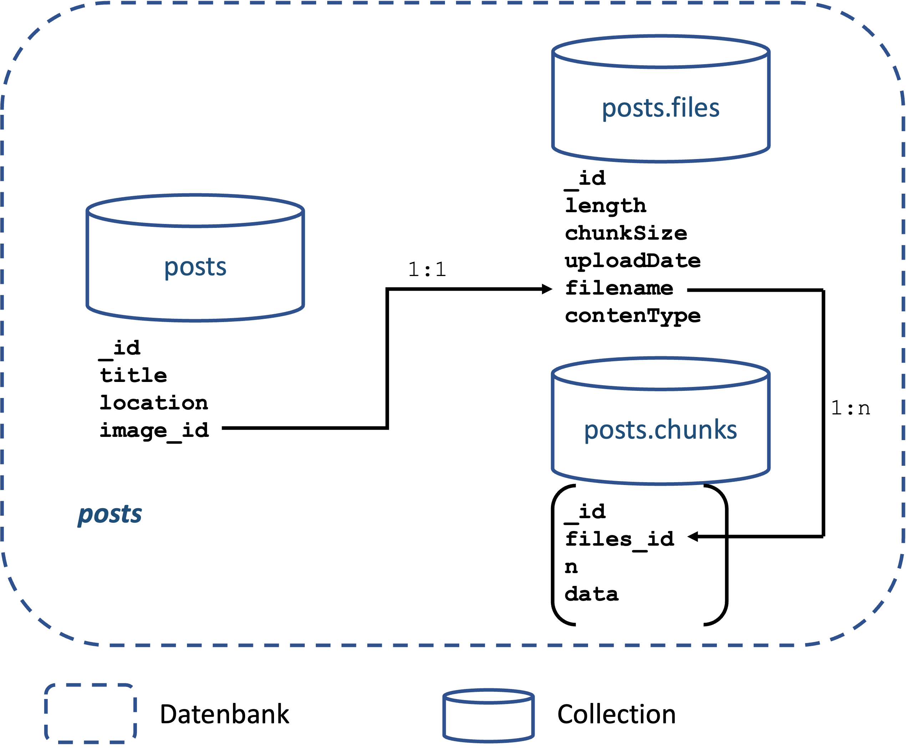
Für unser Datenmodell sieht die Auteilung der Daten somit wie folgt aus:
-
in der
posts-Collection speichern wir- die
_iddes Posts, - den
titleeines Posts, - die
locationund - die
image_id. Dieimage_identhält den Dateinamenfilenamedes Bildes.
- die
-
in der
posts.files-Collection speichern wir (GridFs)- die
_idder Datei, - die
lengthder Datei, - die
chunkSize, - das
uploadDate, - den
filename(siehe inpostsdieimage_id) und - den
contenType(z.B.image/jpeg)
- die
-
in der
posts.chunks-Collection speichern wir (GridFs)- die
_iddes Chunks, - die
files_id(diese entspricht der_idder Datei in derposts.files-Collection), - ein
n(fortlaufende Nummerierung der Chunks einer Datei beginnend mit0), - die
datader Datei (in diesem Chunk)
- die
Chunks kann es zu einer Datei mehrere geben. Alle data aller Chunks einer Datei bilden zusammen die Datei als Binär- (bzw. base64-) Daten. Die folgende Abbildung zeigt unser Datenmodell in der Datenbank posts:
Um z.B. einen Datensatz (einen Post) anzulegen, speichern wir also die zugehörigen Daten in der posts-Collection (inkl. dem filename der Datei), speichern die Meta-Informationen der Datei in der posts.files-Collection und die zugehörigen Binärdaten der Datei in posts.chunks.
POST - kompletter Datensatz¶
Die POST-Funktion für einen Datensatz ist nicht viel umfangreicher als zuvor:
27 28 29 30 31 32 33 34 35 36 37 38 39 40 41 42 43 44 | |
Wichtig ist, dass posts.routes.js nun auch die upload.js einbindet:
4 | |
Beachten Sie, dass die Daten nun nicht mehr als JSON übergeben werden, sondern als form-data. Der Test mithilfe von Postman sieht deshalb nun so aus:
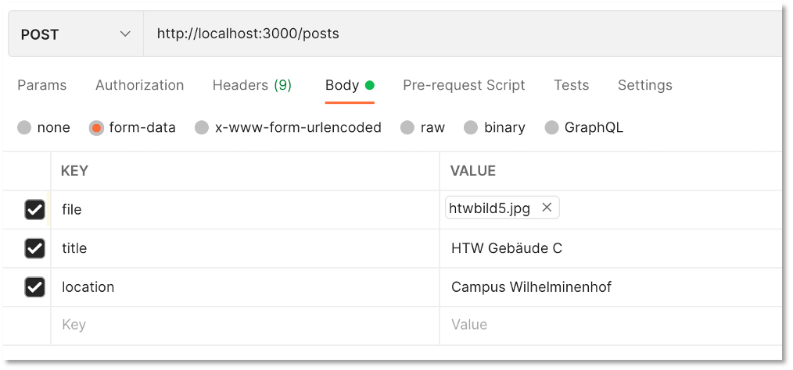
Als Response bekommen Sie aber wieder ein JSON zurück, z.B.:
{
"title": "HTW Gebäude C",
"location": "Campus Wilhelminenhof",
"image_id": "1652166642127-jf-htwbild5.jpg",
"_id": "627a0ff2305433d805b6b437",
"__v": 0
}
Das Bild ist nun in der Collection posts einerseits in posts.files mit den Daten
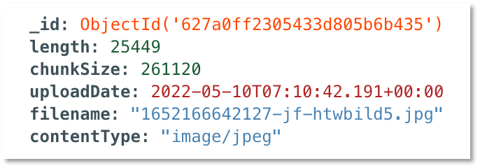
und in posts.chunks mit den Daten
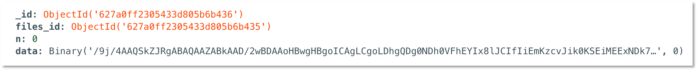
gespeichert. Beachten Sie, dass das Bild so klein ist, dass es in nur einem chunk gespeichert werden kann. Größere Dateien werden in mehrer chunks aufgeteilt. Alle diese chunks, die zu einem Bild gehören, haben dann dieselbe files_id (aber fortlaufende _ids).
In der posts-Collection sieht der Datensatz dann wie folgt aus:
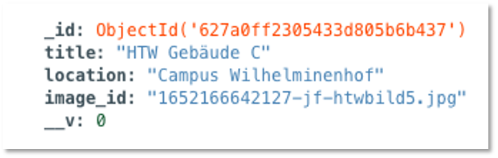
GET - ein kompletter Datensatz¶
Jetzt den kompletten Datensatz mit einer bestimmten _id zu laden, ist etwas aufwendiger:
- Wir laden zunächst aus der
posts-Collection den Datensatz mit der_id. - Aus diesem Datensatz lesen wir die
image_idaus. Das ist derfilenamemit dem wir in derposts.files-Collection suchen. - Aus der
posts.files-Collection lesen wir den Datensatz mit demfilenameaus und identifizieren dessen_id. - Nach dieser
_idsuchen wir unterfiles_idin derposts.chunks-Collection und lesen alle zugehörigenchunksaus.
Dazu schreiben wir uns zunächst eine Funktion getOnePost(id), die ein Promise zurückgibt.
23 24 25 26 27 28 29 30 31 32 33 34 35 36 37 38 39 40 41 42 43 44 45 46 47 48 49 50 51 52 53 54 55 56 57 58 59 60 61 62 63 | |
Die Konsolenausgaben können natürlich auch alle entfernt werden, aber es lohnt sich vielleicht auch zu sehen, was an den einzelnen Stellen passiert. In Zeile 30 erfolgt der Zugriff auf die posts-Collection und es wird der Datensatz mit der _id ermittelt, welche als Parameter der URL übergeben wurde. Aus dem Ergebnis post wird dann der Dateiname des Bildes in Zeile 32 mithilfe von post.image_id ermittelt.
In der post.files-Collection wird in Zeile 34 nach dem Datensatz mit dem entsprechenden filename gesucht. Die _id dieses Datensatzes ist der Wert von files_id in der Collection posts.chunks. Nach all diesen Einträgen wird in Zeile 37 gesucht. Aus allen chunks wird dann der base64-String erzeugt und dem Post-Objekt übergeben, welches als resolve der Promise zurückgeschickt wird.
Diese Funktion können wir nun für unseren get('/:id')-Endpunkt verwenden. Die Funktion sieht dann wie folgt aus:
102 103 104 105 106 107 108 109 110 111 112 113 114 115 | |
Wir übergeben der getOnePost()-Funktion die als Parameter übergebene id und senden den resolve-Wert der Promise als Response zurück.
GET - alle Datensätze¶
Der Ansatz, um alle Datensätze aus der MongoDB zu lesen, ist der gleiche, wie für einen Datensatz. Wir ermitteln sukzessive die _id alle Datensätze in der posts-Collection. Dazu schreiben wir uns eine Funktion getAllPosts(). In dieser laden wir zunächst alle posts und rufen dann für jeden einzelnen die getOnePost(id-Funktion auf:
65 66 67 68 69 70 71 72 73 74 75 76 77 78 79 80 81 | |
Die Verwendung dieser Funktion ist wie oben:
12 13 14 15 16 17 18 19 20 21 22 23 24 25 | |
DELETE - einen Datensatz¶
Wird ein Post gelöscht, müssen wir auch dafür sorgen, dass das zugehörige Bild aus der posts.files und der posts.chunks gelöscht wird. Das Löschen ist also dreistufig:
12 13 14 15 16 17 18 19 20 21 22 23 24 25 26 27 | |
Zusammenfassung - Code des Backends¶
Hier nochmal alle wichtigen Dateien unseres Backends:
1 2 3 4 5 6 7 8 9 10 11 12 13 14 15 16 17 18 19 20 21 22 23 24 25 26 27 28 29 30 | |
1 2 3 4 5 6 7 8 9 10 11 12 13 14 15 16 17 18 19 20 21 22 23 24 25 26 27 | |
1 2 3 4 5 6 7 8 9 10 11 12 13 14 15 16 17 18 19 20 21 22 23 24 25 26 27 28 29 30 31 32 33 34 35 36 37 38 39 40 41 42 43 44 45 46 47 48 49 50 51 52 53 54 55 56 57 58 59 60 61 62 63 64 65 66 67 68 69 70 71 72 73 74 75 76 77 78 79 80 81 82 83 84 85 86 87 88 89 90 91 92 93 94 95 96 97 98 99 100 101 102 103 104 105 106 107 108 109 110 111 112 113 114 115 116 117 118 119 120 121 122 123 124 125 126 127 128 129 130 131 132 133 134 135 136 137 138 139 | |
DB_CONNECTION = mongodb://localhost:27017/posts
PORT = 3000
Zusammenfassung - die MongoDB posts¶
Hier einige Datensätze für die Datenbank posts:
1 2 3 4 5 6 7 | |
1 2 3 4 5 6 7 8 9 10 11 12 13 | |
Die Collection posts.chunks ist sehr groß, deshalb hier zum Download.